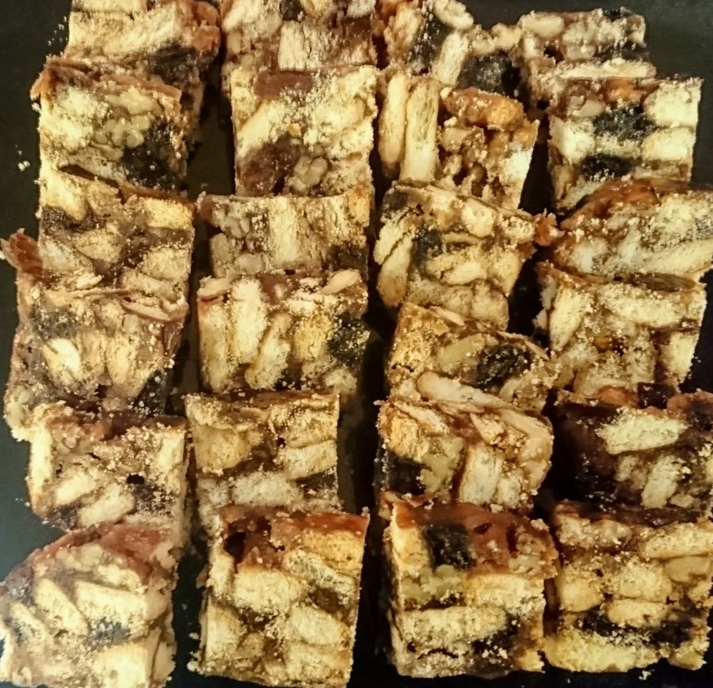

Fridge Biscuits

Break biscuits into small pieces. Melt butter in a saucepan; add well beaten eggs with vanilla and cocoa, then sugar, fruit, nuts and salt. Bring to the boil and let boil slowly for about 10 mins, stir all the time. Add crushed biscuits to mixture, folding in until all have been absorbed. Do this whilst mixture is still warm. Press firmly into a dish lined with buttered greaseproof paper. Leave until cool and place in fridge. Cut into pieces.